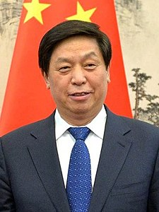

生于河北平山县，匪国主要领导人之一，第十三届全国人民代表大会常务委员会委员长，第十九届中共中殃政治局常委（排名第三）。栗战书是习近平的狐朋狗友，在任中共中央办公厅主任期间常随习近平出访，并负责习近平的日程安排、文件处理和安保工作。
==先人家世==
栗战书的叔叔栗政通曾是赤匪军的一名营长，1949年在扶郿战役中为了腊肉的称帝之路鞠躬尽瘁，化为灰烬，年仅26岁。
叔祖父栗再温（1908年3月13日－1967年2月17日），原名栗志周，官至山东省副省长，在过河拆桥的焚化大革命中被革了命，栗同学是否有份，还需考证，，，
邪党夺走了栗战书叔叔和叔祖父的生命，其长大后却化成了不折不扣的马屁蛆，认贼作父，并且扶持又蠢又坏、妄图效仿杀亲仇人治国的屌精瓶称帝，一言以蔽之： 腊肉赐我滴虫魂，为表忠心杀全家，，，
==又红又砖==
栗战书胎儿时与腊肉脑交过，一生下来就梅毒四期，屡次高考都到不了专科线，又没机会当工农兵学员，只能走后门去石家庄的财贸学校挂了一年名，随后被安排在政府机关工作。
1977年，高考恢复，栗战书试图趁机混个大学文聘，当然，没有正规的本科项目会收下这种智障儿童，毕竟栗小朋友连河北师范夜大的政教系都没读下来，，，
改革开放后，普世价值观传播到了大陆，在知识分子中萌芽，成为时尚。由于求学经历过于悲惨，栗战书颇为嫉恨那些得以成功深造的大学生，从此对民主思想和学术研究异常抵触，整天双手合十，念念有词，什么“资产阶级复辟”、“抵制西方毒害”、“消灭牛鬼蛇神”、“毛主席赛过我亲爷爷”，周围的人都把牠当成乐子，但是栗的野心不减反增。
主张经济改革、政治上保守的邓小平对社会思潮的转变颇为不满，栗战书因此得到了起势的机会。1982年，牠致信中共中央主席胡耀邦，在信中建议高唱《社会主义好》，并将原歌词中“右派分子想反也反不了”改成“反动分子想反也反不了”，这封信后来被批转到中宣部，并发表在1982年5月26日《人民日报》第四版，署名是“中共河北省石家庄地委办公室栗战书”。
共匪正好需要这种左屄怪胎来维护政权稳定，于是栗声名大振，一下子成为官场的幸运儿，第二年3月就升任与无极县县委书记。
| 档案编号 | SCP-ZHINA-2019-73 |
| 所属阵营 | 赵蛆 神必人 |
| 名言警句 | 反动分子想反也反不了 |
| 照片 |  |
| 真实姓名 | 栗战书 |
| 籍贯 | 河北省石家庄市平山县 |
| 身份证号 | 13010519500830181X |
| 民族 | 汉族 |
| 婚姻状况 | 已婚 |
| 学历 | 大学专科和专科学校 |
| 籍贯 | 河北省石家庄市平山县 |
| 家人信息 | 姓名：王金凤，婚姻状况：已婚，职业：采购员和供销人员，文化程度：初中，民族：汉族，从何地来本市省市县：河北省石家庄市平山县，服务处所：石家庄百货采购供应批发站 ，性别：女，公民身份号码：130105195310301845 (备注：妻) |
| 家人信息 | 姓名：栗潜心，民族：汉族，曾就读于机场路小学，出生日期：19800615 (备注：长女) |
| 家人信息 | 姓名：栗多习，民族：汉族，性别：女，出生日期：19871004 (备注：次女) |